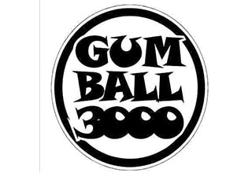

NAKLİYAT LOJİSTİK
KARAYOLU TAŞIMACILIĞI
Karayolu komple ve parsiyel taşımacılığında uzman ekibimiz,her yüke uygun araç çaşitlerimiz ile en uygun teklifi alın!
MOTO GP TÜRKİYE
Türkiye'de düzenlenen ilk MOTOGP yarışının lojistik, gümrükleme ve depolama ihtiyaçlarını Bis Ulusal Lojistik karşılamıştır.

GUM BALL 3000
Türkiye'de yapılan GUM BALL 3000 klasik otomobil yarışının lojistik ve depolama ihtiyaçlarını Bis Ulusal Lojistik karşılamıştır.FORMULA 1 TÜRKİYE
Türkiye'de düzenlenen ilk FORMULA 1 yarışının lojistik, gümrükleme ve depolama ihtiyaçlarını Bis Ulusal Lojistik karşılamıştır.
NEDEN NAKLİYAT
NAKLİYAT LOJİSTİK SEKTÖRDE 20 YILI AŞKIN TECRÜBESİ, TEKNOLOJİYİ ETKİN KULLANMASI,
UZMAN PERSONEL YAPISI VE BİRLEŞİK HİZMETLERİYLE TÜM İHTİYAÇLARINIZI
KARŞILAMAYA HAZIR.

TAM ZAMANINDA
TAM İSTEDİĞİNİZ GİBİ
“Bizim İçin En Önemli İlke”
Bizler çok iyi biliyoruz ki...Müşteri memnuniyeti herşeyden önce gelmektedir.İşte bu nedenle...
ÇALIŞMANIN, ÜRETMENİN, GELİŞMENİN VE HİZMETİN NAKLİYAT LOJİSİTİK için sınırı yoktur.

İSTANBUL MERKEZ
Tel: (+90) 212 656 76 76
Fax: (+90) 212 656 76 35
web@bislogistics.com.tr
Akçaburgaz Mh. 3108 Sk.
No: 3/1 Kıraç 34522
Esenyurt / İstanbul
Tel: (+90) 212 656 76 76
Fax: (+90) 212 656 76 35
web@bislogistics.com.tr
Akçaburgaz Mh. 3108 Sk.
No: 3/1 Kıraç 34522
Esenyurt / İstanbul
Bis Ulusal Lojistik deneyimli kadrosu ve hızlı servisi ile
gümrüklere, uluslararası nakliye şirketlerinin
depolama, ihracat ve ithalat taşımaları yapmaktadır.


BURSA ŞUBE
Tel: (+90) 224 241 34 34
Fax: (+90) 224 242 68 52
bursa@bislogistics.com.tr
OSB Ali Osman Sönmez Blv.
1. Sok. No:2, 16140
Nilüfer / Bursa
Tel: (+90) 224 241 34 34
Fax: (+90) 224 242 68 52
bursa@bislogistics.com.tr
OSB Ali Osman Sönmez Blv.
1. Sok. No:2, 16140
Nilüfer / Bursa